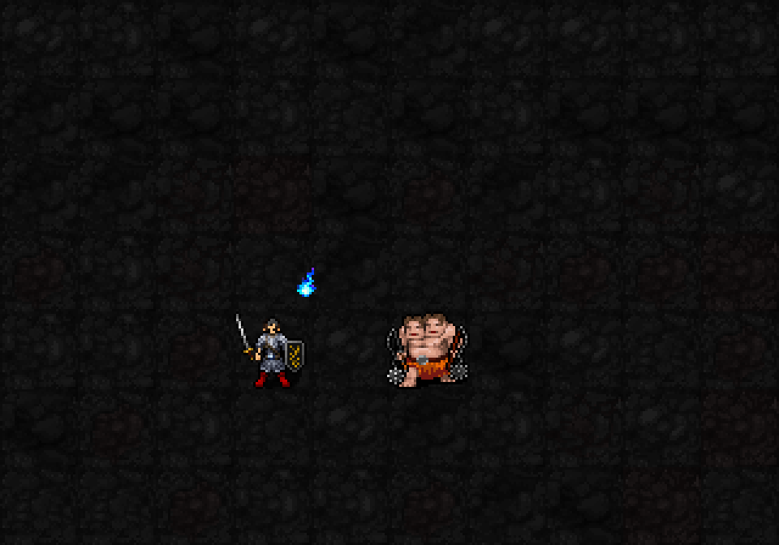
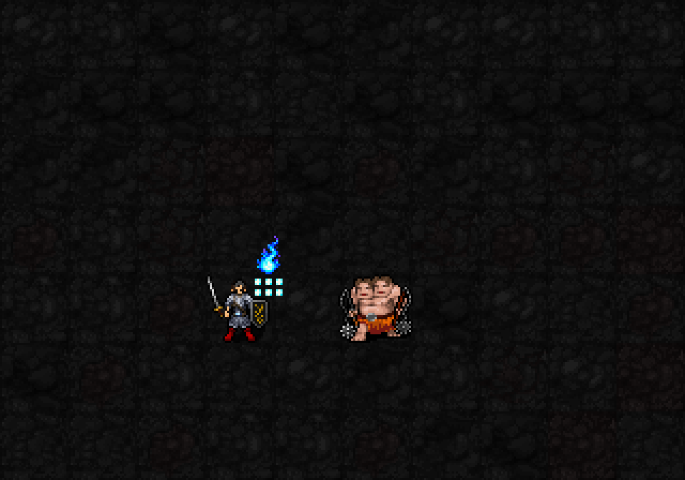

신앙30 해금 / 최소 기도술 제한 없음 / 상시 패시브·무료 설정

머리 오른쪽 위의 푸른 도깨비불은 가호 표시. 열기가 늘면 조금 커지고, 아래 작은 불씨 개수로 현재 열기를 표시합니다. 0에서도 기본 가호 불꽃은 남습니다.

반격은 적 몸통 중심에서 청백색 섬광과 짧은 푸른 불꽃이 사방으로 터집니다. 위로 피어오르는 가호 도깨비불과 다른 모양이며 지속 장판이 아닙니다. 열기 한 개를 쓴 뒤 본인 옆 작은 불씨도6개에서5개로 줄어드는 모습입니다.
| 항목 | 내용 |
|---|---|
| 가호 | 상시rF+1단계. 장비·종족저항과 정상 합산 |
| 열기 | 최대6. 유효 적 공격에 명중·방패방어 시+1, 적 화염 공격/화염지속피해는 대신+2. 적원천 획득은1턴구간 합계최대2 |
| 불씨 반격 | ON일 때 일반 직접 공격이 기본 피해를 주면 열기1소비, 주대상1명에게1d(3+⌊I/6⌋)추가화염. I12:1d5·평균3. AC무시·rF적용 |
| 공격 종류 | 근접·맨손·사격·투척·직접 피해 주문. 행동당1회. 빗나감·기본피해0이면 미소모. 소환수·지속피해 제외 |
| 설정 | 무료 무턴ON/OFF. OFF로3성용 열기 저장 가능 |
| 감쇠 | 마지막 획득 후3턴 유지, 이후2턴마다1감소. 층이동·배교 시 제거 |
실제 SDL 렌더러에 열기 표시와 반격 외형 단계를 준비해 촬영한 초안입니다. 이번 GIF에서 실제 공격·열기 획득/소비·추가 피해는 실행하지 않았고, 실제 열기·대상HP·월드·RNG는 변하지 않았습니다. 메라 기존 전투 수치는 변경하지 않았으며 새 이펙트는 아직 전투 콜백에 연결하지 않았습니다. 일반실행본su-five01유지. 도깨비불 원화는built-in imagegen으로 생성,가호8×12~11×18px/작은불씨3px/반격최대28px폭로 적용. 본인 가호와 대상 반격 위치 검증·22신/저장복원 통과.